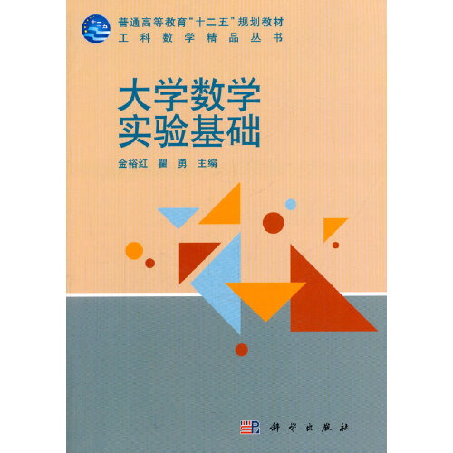
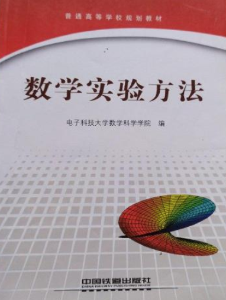
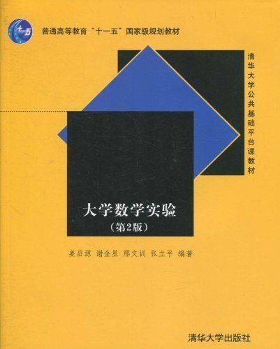
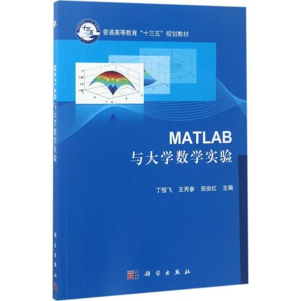
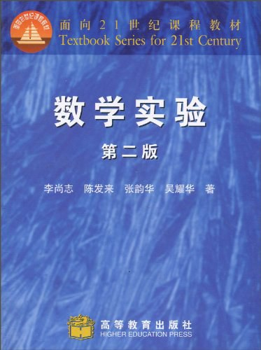

 
郝庆一, 汉族, 1976年12月出生, 安徽六安人, 博士, 教授, 硕士生导师。
1999年至今在安庆师范大学从事教学科研工作。
2012年7月在中国科学技术大学获工学博士学位。
2007年7月在宁夏大学获理学硕士学位。
1999年7月在安庆师范学院获学士学位。
研究方向: 计算数学、复杂系统、交通流理论和博弈论等。
大学数学实验是实验探究式学习大学数学相关课程的一种方法，以数学软件为实验工具，结合一元微积分、多元微积分、线性代数、概率统计等知识点设计相关实验内容， 着重培养学生自主探索学习、研究和解决数学问题的能力。
...
...
...